Lens calibration
You photograph a printed chessboard from about 17 positions with the Raspberry Pi HQ camera. OpenCV then calculates the focal length, the optical centre and the lens distortion of your camera. With these numbers you can remove the distortion from your photos and videos, so that positions and angles that you measure in the image are correct.
- You need
- A Raspberry Pi 5 with the HQ camera and its 6 mm lens, the
comp0219environment from Week 6, and the printed chessboard on stiff card - Code
tutorials/week07_calibration/:calibration_cap.pytakes the photos andcalibration.pycalibrates- You get
- The camera matrix K, five distortion coefficients and the reprojection error in pixels, saved in
calibration_data.npz - Follows
- Lecture 5, “Camera basics”: camera parameters (slides 95–115) and lens distortion (slides 119–124)
Theory
Why calibrate?
Goal. Estimate the intrinsic parameters of your camera. These are the numbers that describe the camera and its lens, independent of where the camera is pointing.
Why it matters. With these numbers, you can map accurately between a 3D point in the world and the pixel where it appears in the image. You need this mapping when you measure objects in images, reconstruct 3D scenes, or guide a robot with a camera.
Why it matters in this module. In Part 2 you build a vision-based airspeed sensor, so you measure positions and angles of an object in your camera videos. The HQ camera with the 6 mm lens has strong barrel distortion: near the edges of the image, straight lines bend and points are shifted by more than 100 pixels. A position or an angle that you measure there is wrong unless you correct the distortion first.
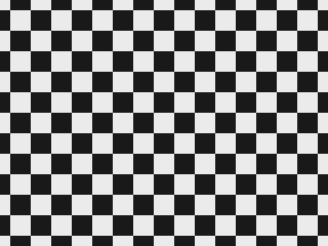
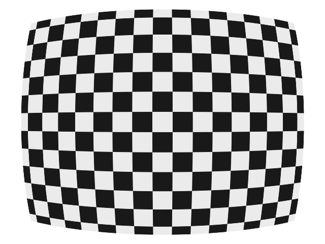
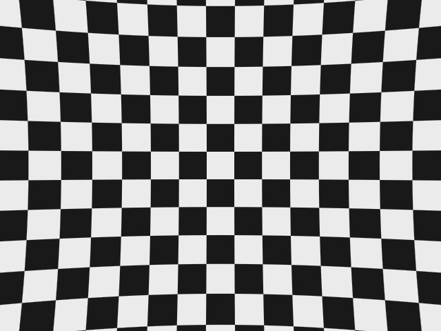
These three pictures are synthetic: the same flat chessboard is drawn through the distortion model of section 1.4. Calibration estimates the coefficients of this model, and undistortion uses the model in reverse.
Here is the same effect in a real photo from the HQ camera of a course kit. The edges of the printed sheet and of the card behind it bend outwards. After the calibration of this tutorial, they are straight.
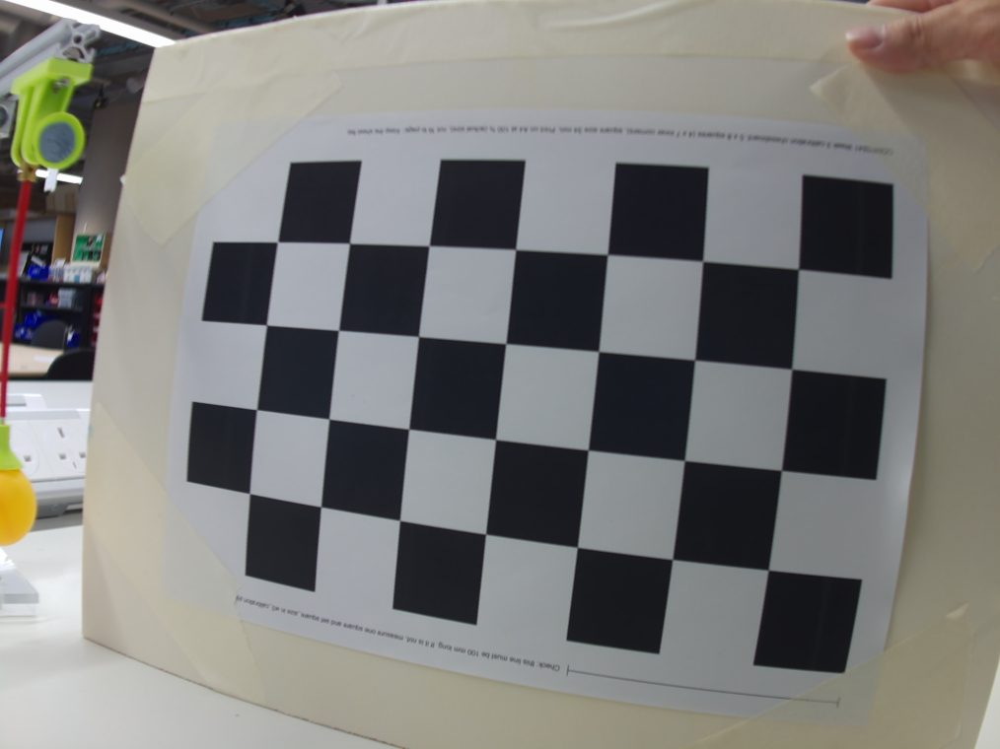
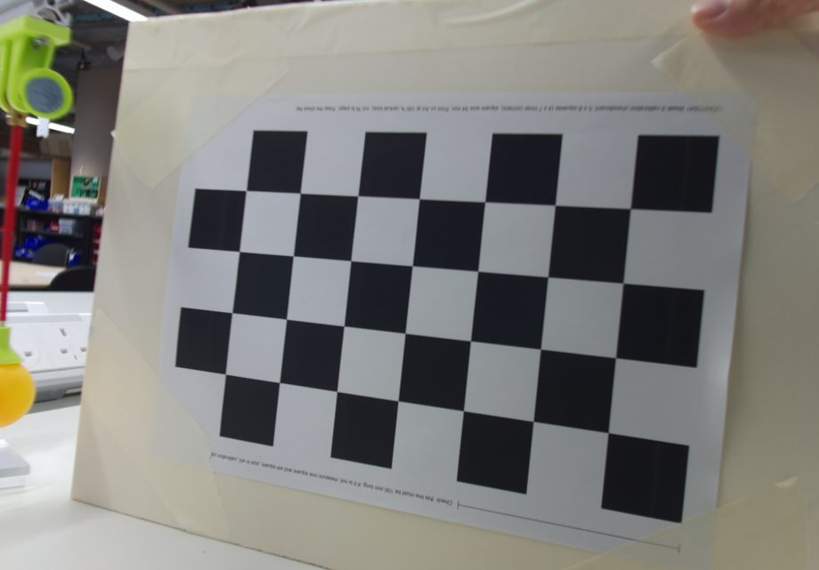
OpenCVtutorial: Camera Calibration › Goal·cv2.calibrateCamera·cv2.undistort
Pinholes and real lenses
Pinhole model. Light from a 3D object passes through a tiny hole and forms an upside-down 2D image on the back wall of the camera. This back wall is the image plane, and its distance \(f\) behind the hole is the focal length. Each point in the world sends exactly one ray through the hole, so straight lines stay straight.
Real cameras use lenses. A pinhole lets through very little light, so real cameras use a lens to collect and focus many rays from each point. The lens is curved, though, and its magnification changes slightly with the distance from the centre: rays towards the edge of the field of view are bent slightly too much (or too little). This is distortion, and it is strongest at the edges of the image.
OpenCVcalib3d reference › pinhole camera model·tutorial: Camera Calibration › Basics
Radial and tangential distortion
Radial distortion is the most common kind. Straight lines in the world come out curved, and the effect grows with the distance from the image centre. With the radial distortion coefficients \(k_1, k_2, k_3\) (defined in section 1.4), lines bow outwards in barrel distortion (k₁ < 0, typical of wide-angle lenses such as the 6 mm lens of the HQ camera) and inwards in pincushion distortion (k₁ > 0). When k₂ and k₃ are also not zero, the sign of k₁ alone does not always tell you which type you have.
Tangential distortion appears mainly when the lens is not exactly parallel to the image sensor. The picture then looks slightly tilted or stretched to one side.
Try it below. The grey grid is what an ideal pinhole camera would record. The black grid is the same grid seen through a lens with the coefficients that you set. Drag the red probe to see the formula of the next section evaluated at that pixel. All numbers are in pixels of a 2028 × 1520 photo, the image size that this tutorial uses.
OpenCVbased on: Camera Calibration › Basics·calib3d reference › barrel and pincushion
The distortion model
OpenCV describes the lens with five numbers, the distortion coefficients. They are always stored in this order:
The radial coefficients \(k_1, k_2, k_3\) model barrel and pincushion distortion (curved lines). The tangential coefficients \(p_1, p_2\) model the tilts and shifts caused by a lens that is slightly misaligned.
Both act on the normalised image coordinates \((x, y)\) of a point. These are the position of the point on a plane one unit in front of the camera, without units (\(x = X_c / Z_c,\; y = Y_c / Z_c\), section 1.5), before the conversion to pixels. OpenCV applies both kinds of distortion together:
Because of the \(r^2, r^4, r^6\) terms, the correction is tiny near the centre (\(r \approx 0\)) and largest in the corners of the image. That is why your calibration photos need the board near the edges and corners of the image (section 2.3).
Undistortion runs this mapping in reverse: for every pixel in the corrected image, OpenCV asks where it came from in the distorted photo. You never have to invert the polynomial yourself.
OpenCVcalib3d reference › distortion model·tutorial: Camera calibration With OpenCV › Theory·cv2.initUndistortRectifyMap
The camera model
A camera model is the mathematical recipe for where a 3D world point \(P = (X, Y, Z)\) lands in the image, at the pixel \(p = (u, v)\). In homogeneous coordinates:
The scale factor \(s\) is the depth of the point in front of the camera. Dividing by it is what makes distant objects look smaller. Up to this scale, \(p = K[R \mid t]\,P\).
| Group | Symbol | Meaning | Changes when… |
|---|---|---|---|
| Extrinsic | \(R\) | Rotation from world (board) coordinates to camera coordinates: how the board is turned, as seen from the camera | you move the camera or the board |
| \(t\) | Translation: the world origin (the first inner corner of the board) in camera coordinates | you move the camera or the board | |
| Intrinsic | \(f_x, f_y\) | Focal length in pixel units, horizontal and vertical: the physical focal length divided by the pixel width or height. They are nearly equal on sensors with square pixels. | you turn the focus ring, change the lens, or change the image size or the sensor mode |
| \(c_x, c_y\) | Optical centre (principal point), in pixels: where the optical axis of the lens meets the image sensor, usually near the centre of the image | you change the image size or the sensor mode, or crop the image | |
| \(k_1 \dots p_2\) | Distortion coefficients (section 1.4) | you change the lens or turn the focus ring |
\(t\) is not the position of the camera in the world. It is the other way round: \(t\) is the world origin seen from the camera. The position of the camera in world coordinates is \(-R^\top t\).
The full chain that OpenCV's cv2.projectPoints follows, and that the calibration fits, is:
- World → camera. \(\;[X_c, Y_c, Z_c]^\top = R\,[X, Y, Z]^\top + t\)
- Normalise. \(\;x = X_c / Z_c,\; y = Y_c / Z_c\) (here \(s = Z_c\))
- Distort. \(\;(x, y) \to (x_d, y_d)\) with the model of section 1.4
- To pixels. \(\;u = f_x\,x_d + c_x,\; v = f_y\,y_d + c_y\)
The calibration estimates the intrinsics (K and the distortion coefficients), which belong to the camera. It also returns the extrinsics of every calibration photo, that is, where the board was in each photo.
OpenCVcalib3d reference › projection with A and [R|t]·cv2.projectPoints·cv2.calibrateCamera
Prepare
The task
Use OpenCV to calibrate the HQ camera of your kit, and undistort an image.
By the end of the tutorial you should have:
- a folder of about 17 chessboard photos, taken with your HQ camera at 2028 × 1520 pixels (or at the image size and sensor mode of your wind-tunnel videos);
- your camera matrix \(K\) and distortion coefficients, saved in
calibration_output/calibration_images/calibration_data.npz; - the root-mean-square (RMS) reprojection error, in pixels, as a measure of how good the calibration is;
- an undistorted photo to compare with the original.
You use two scripts. calibration_cap.py takes the photos, either with a live preview window on the Pi desktop or in terminal mode over a remote shell (section 3.1). calibration.py calculates the calibration from a folder of photos or from a video (section 3.2).
A calibration is only valid for one image size, one sensor mode and one focus setting. The sensor mode is the way the camera reads out its sensor, for example the full sensor, or a binned or cropped part of it. The 120 fps mode of the HQ camera, for example, uses only the central part of the sensor, so a calibration made in the 2028 × 1520 mode is wrong for 120 fps videos. So capture the calibration photos with the same image size and the same sensor mode as your wind-tunnel videos, and do not turn the focus ring after you calibrate. If you change the size, the sensor mode or the focus, calibrate again.
OpenCVsample: calibrate.py·tutorial: Camera calibration With OpenCV › Goal
The chessboard
Why a chessboard? To calibrate, we need many pairs of a known 3D point and the 2D pixel where it appears. A chessboard provides both. It is flat, so every corner has \(Z = 0\). Its squares have a known size. And OpenCV can find its corners automatically and precisely.
OpenCV looks for the inner corners, the points where four squares meet, not for the squares themselves. Count them carefully, because the scripts must be told the exact number:
The tutorial uses a 5 × 8-square board with 34 mm squares, the same board as in the sample photos and in our HQ camera photos. It has 4 × 7 inner corners. The order of the two numbers in chessboard_size does not matter for the detection. The scripts are already set up for this board:
chessboard_size = (4, 7) # Must be the same as in calibration_cap.py
square_size = 34.0 # Size of a square in your defined unit (e.g., 1.0 for meters or mm)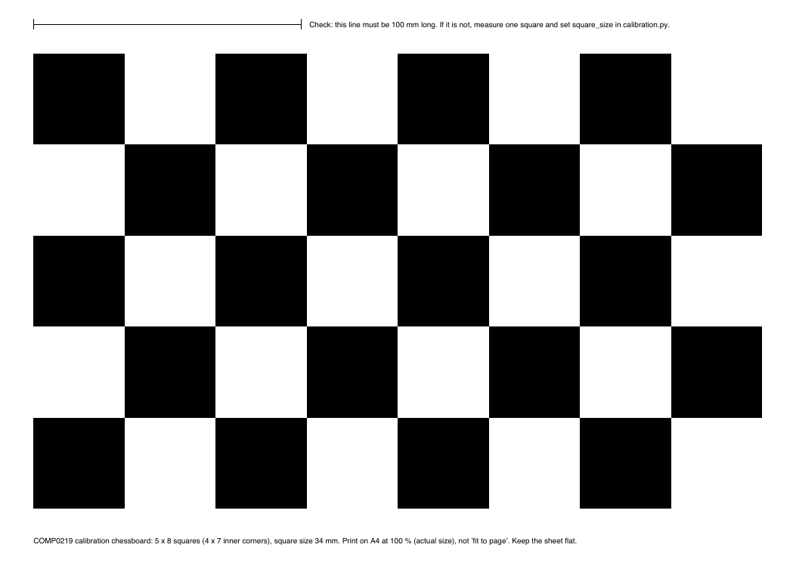
- Print chessboard_5x8_34mm_A4.pdf on A4 paper. In the print dialog, choose “100 %” or “Actual size”. Do not choose “Fit to page”, because that makes the squares smaller.
- Measure the line at the top of the sheet with a ruler. It must be 100 mm long. If it is not, measure the width of 5 squares, divide it by 5, and write the result into
square_sizeincalibration.py. - Fix the sheet flat on something stiff, for example a clipboard, a foam board or thick cardboard. Use glue, or tape along all four edges. The calculation assumes that all corners lie in one flat plane, so a bent or wavy sheet gives a wrong calibration.
- Use matt paper. Glossy paper and laminated sheets reflect the lamps, and a reflection can hide corners (section 2.3).
- Set
chessboard_sizeto (squares across − 1, squares down − 1) in bothcalibration.pyandcalibration_cap.py. - Print at 100 % scale, measure one square with a ruler, and set
square_sizeto that value. square_sizeonly sets the units of the board positions (tvecs), which you need later if you measure positions in millimetres. K, the distortion coefficients and the error come out the same whatever you enter there.
OpenCVcv2.findChessboardCorners·tutorial: Create Calibration Pattern
Taking good photos
A calibration is only as good as its photos, so take your time over this step. Tick the boxes as you go. They are saved in this browser only.
The 17-photo shot list
Photos that look almost the same add nothing. The calibration needs corners in all parts of the image, and it needs the board at different angles. Take these 17 photos, keeping the camera still and moving the board:
| Photos | Where the board is and how you hold it | Why |
|---|---|---|
| 3 | In the centre of the image, facing the camera straight on: one near, one at middle distance, one far | A start, at three sizes |
| 4 | In each corner of the image (top left, top right, bottom left, bottom right), facing the camera. Move the board until its outer squares almost touch the corner of the image. If the board is too big to reach a corner, hold it a little further away. | Lens distortion is strongest near the corners and edges of the image. Without inner corners there, the distortion is only guessed. |
| 4 | Next to each edge of the image (left, right, top, bottom), facing the camera | The same reason |
| 4 | In the centre, tilted by about 30–45°: one photo each with the top edge, the bottom edge, the left edge and the right edge turned away from the camera | Tilted photos are needed to measure the focal length. If the board always faces the camera straight on, moving it closer looks the same as a longer focal length. |
| 2 | Tilted and also turned in the image by about 20–30°, in two different places in the image | More different views |
For every photo, keep the whole board, including some of its white border, inside the image, make sure that it is sharp, and tilt it by no more than about 60°. Beyond that, the squares look too thin to be found reliably.
This simulated example comes from the COMP0241 calibration tutorial. The printable board is rendered with a virtual webcam (640 × 480, f = 553 px) with known, moderately strong barrel distortion. Each set of 17 photos is then calibrated twelve times, each time with different random noise.
| 17 photos | RMS error | fx (true 553 px) | Worst corner error in the undistorted image |
|---|---|---|---|
| The shot list | 0.13 px | 552–554 | 2 px (max 3) |
| All in the centre, facing the camera | 0.11 px | 522–597 | 7 px (max 18) |
The photos in the centre give an RMS error that is just as small, or even slightly smaller. Yet their focal length can be up to 45 px wrong, and the corners of the image can be displaced by up to 18 px.
Good and bad photos
The first picture below is the sample photo calibration_image_09.jpg. The other five pictures are simulated from it, and each one shows a common fault. The captions say what the chessboard detection of calibration.py does with each picture. Glare and a board cut off by the edge of the image are rejected, so the capture script does not save them. Blur is the dangerous fault: the board is still found, the photo is saved, and its corners are in the wrong place.
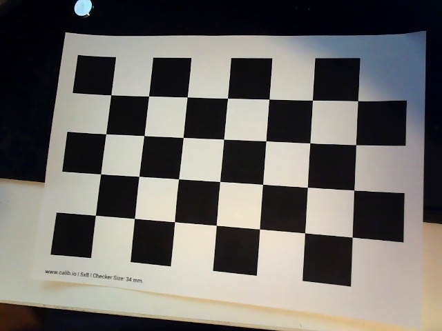
Sharp, the whole board in the image, even light. Every photo should look like this.

The board moved while the photo was taken. It is still found, but the corners are on average 0.9 px (and up to 3 px) away from their positions in the sharp photo. Hold the board still while you save a photo.

The board is too close or too far for the focus setting. It is found, but the corners are on average 0.4 px (and up to 1.3 px) away. Stay in the distance range in which the preview is sharp.
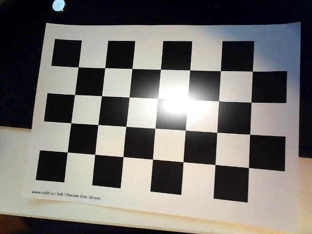
A lamp reflects on the paper and washes out some corners. The board is not found, so the photo is not saved. Turn the board away from lamps and windows, and use matt paper.

Part of the board is outside the image. The board is not found, so the photo is not saved. Keep the whole board, with some of its white border, inside the image.

Dim and noisy, but still found, and the corners are on average only 0.1 px (up to 0.5 px) away. Add light anyway, because a longer exposure makes blur more likely.
If the motion-blurred picture replaces calibration_image_09.jpg in the sample photos, the RMS reprojection error over all photos rises from 0.35 px to 0.54 px. The error of this one photo is 1.02 px, while the other photos have 0.22 to 0.62 px. So always look at the error of each photo (section 3.3).
The same faults in real HQ camera photos
We tested this tutorial with the HQ camera of a course kit and took 23 photos with calibration_cap.py. Two of them show what the capture script cannot check.
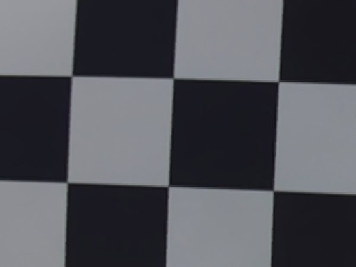
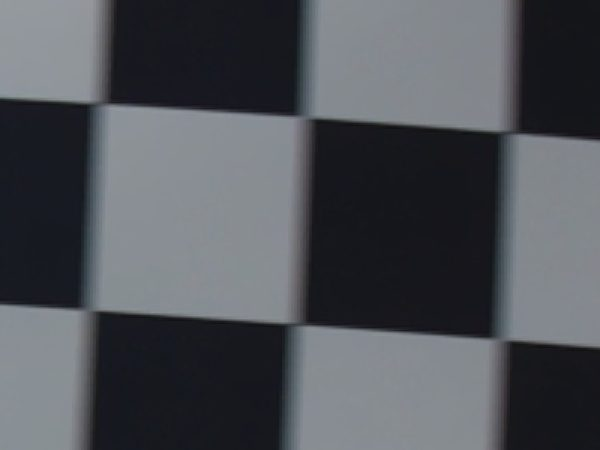
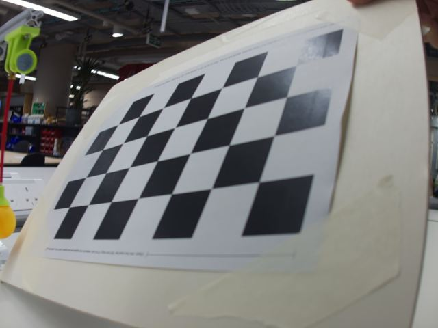
In photo 19 the board moved sideways while the photo was taken, so the vertical edges of the squares are smeared. The capture script still found the board and saved the photo, and later this photo had the largest error of all (2.36 px, while most photos had 0.2 to 0.8 px). Photo 05 was saved because the capture script found the board in its small 640-pixel copy of the image, but calibration.py, which searches the full-size photo, could not find it and skipped it. Both details are shown at the full resolution of the camera.
Example: where the corners are in the image
The six sample photos come with the tutorial in sample_calibration_images/. The views are sharp, the whole board is visible and the tilts vary, all of which is good. But there are only six photos, and the board never reaches the corners of the image:
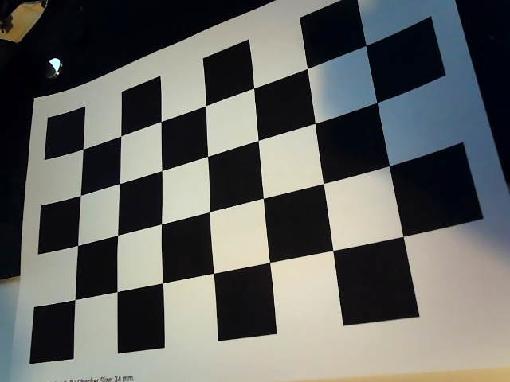
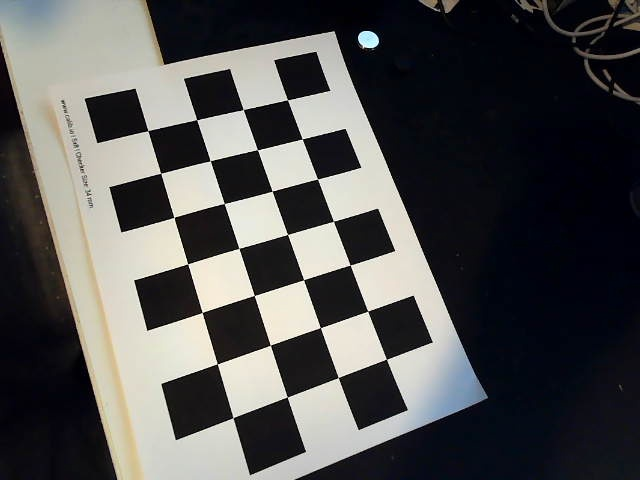
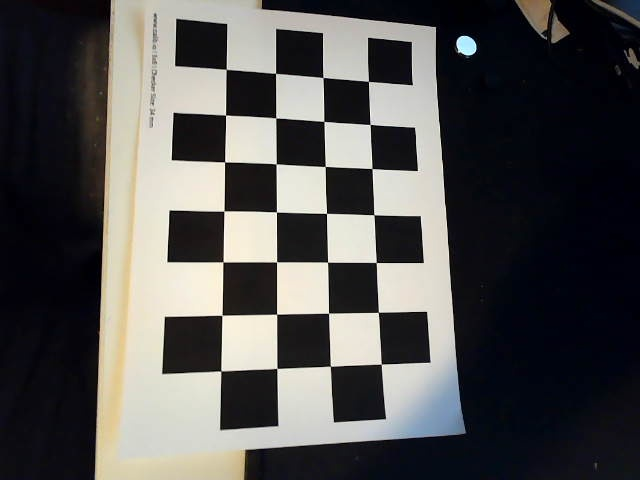
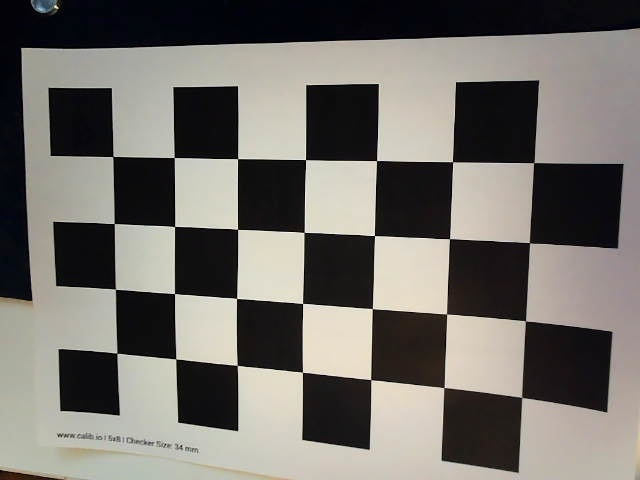
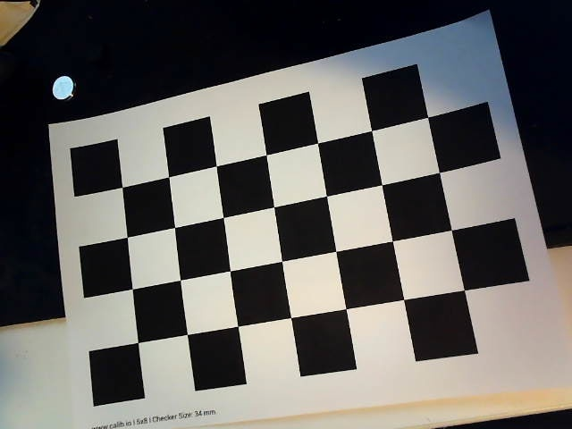
The right-hand plot shows the 22 HQ camera photos of our test in which the board was found. They cover the top and the middle of the image well, but only 38 of the 616 corners (6%) lie in the bottom third, and the two bottom corners of the image have almost none. The camera sat just above the table, so the board had to be held very low to reach the bottom of the image, and we did not do that often enough. The distortion near the bottom corners is therefore extrapolated, not measured. Aim for a plot that fills the whole image. Section 5.1 has a snippet that makes this plot for your own photos.
OpenCVtutorial: Interactive camera calibration application › Calibration process·tutorial: Create Calibration Pattern › Generic Recommendations
Set up the Pi
You run this tutorial on the Raspberry Pi 5 of your kit, with the HQ camera. You can work in two ways:
- On the Pi desktop, with the lab monitor or with Raspberry Pi Connect Screen sharing. The capture script then shows a live preview window, in which you can see where the board is and whether it is sharp. This is the recommended way.
- In Raspberry Pi Connect Remote shell, or over SSH. There is no desktop, so the scripts open no windows. The capture script uses terminal mode instead (section 3.1).
Activate the environment from Week 6. On the Pi, OpenCV and NumPy come from apt, and you use the
comp0219environment that you created in Week 6. It was made with--system-site-packages, so it can see the apt packages. There is nothing to install with pip for this tutorial.Terminal on the Pisudo apt install -y python3-opencv # does nothing if OpenCV is already installed source ~/comp0219/bin/activateTo check the environment, run the command below. If it prints two version numbers and no error, the environment is correct.
Terminal on the Pipython -c "from picamera2 import Picamera2; import cv2, numpy; print(cv2.__version__, numpy.__version__)"On our test Pi (Raspberry Pi OS Bookworm), it printed
4.6.0 1.24.2. The Pi uses OpenCV 4.6 from apt, while laptops install version 4.8 or newer with pip. Both versions work with these scripts, so the older version on the Pi is expected.If you did not create the environment in Week 6, run these commands once (section B of the Week 6 Picamera2 tutorial explains each step):
Terminal on the Pi · only if you have no comp0219 environmentsudo apt install -y python3-picamera2 python3-opencv python3-numpy python3-matplotlib python3 -m venv ~/comp0219 --system-site-packages source ~/comp0219/bin/activateNever install OpenCV or NumPy with pip on the PiDo not run
pip install -r requirements.txton the Pi. pip would install a second copy of OpenCV and NumPy 2 into the environment. Some parts of Picamera2 were built for the NumPy version from apt, sofrom picamera2 import Picamera2would then stop working (section 4.3 shows how to repair this).Get the code. The scripts are in the folder
tutorials/week07_calibration/of the course repository. If the repository is already on your kit from Week 6, get the newest version:Terminal on the Pi · repository already on the kitcd ~/COMP0219_Tutorials git pull cd tutorials/week07_calibrationOtherwise, download it first:
Terminal on the Pi · first timecd ~ git clone --depth 1 https://github.com/Dkaka/COMP0219_Tutorials.git cd ~/COMP0219_Tutorials/tutorials/week07_calibrationCheck the folder. You should see:
tutorials/week07_calibration/week07_calibration/ ├── calibration_cap.py captures the calibration photos ├── calibration.py calculates the calibration ├── calibration_data.npz reference result for the sample photos ├── chessboard_5x8_34mm_A4.pdf the chessboard to print (A4, 34 mm squares) ├── img/ the figures of the README ├── sample_calibration_images/ 6 sample photos (640 x 480 pixels) for testing ├── requirements.txt Python packages for a laptop (not for the Pi) └── README.md the instructions in text formThe scripts create two more folders next to themselves.
calibration_cap.pysaves your photos incalibration_images/, andcalibration.pywrites its results tocalibration_output/, in a subfolder with the name of the photo folder.
The scripts also run on a laptop. There, create a normal virtual environment (without --system-site-packages) and run pip install -r requirements.txt in it. calibration_cap.py then uses the webcam through cv2.VideoCapture(0), so it calibrates the webcam and not the Pi camera. python calibration.py with the sample photos works on a laptop in the same way as on the Pi.
Capture and calibrate
Capture photos
There are two programs for taking the photos. Both save the photos in the same folder, calibration_images/, so you can use either of them, or both.
calibration_gui.pyopens a window with buttons on the Raspberry Pi desktop. It helps you most, so use it if you can.calibration_cap.pyworks with keys. It also works without a desktop, for example over SSH or in the Pi Connect remote shell (terminal mode).
On the Pi desktop: the capture window (calibration_gui.py)
python calibration_gui.pyRun it in a terminal on the Raspberry Pi desktop, on the lab monitor or in the screen sharing of Raspberry Pi Connect. The window needs Tkinter, which comes with the desktop version of Raspberry Pi OS. If Python says that tkinter is missing, install it with sudo apt install -y python3-tk. SSH and the Pi Connect remote shell have no desktop, so there the program stops with a message. Use calibration_cap.py there instead.
Press Start to see the live picture of the camera. Then hold the board in front of the camera. The status line under the picture says what the program sees: “No chessboard”, “hold still” or “ready”.
| Control | What it does |
|---|---|
| Save photo, Space or c | Save a photo when the status line says “ready”. |
| Motion check (on at the start) | A photo is saved only after the board has been still for a moment (0.3 seconds), so that the photo is sharp. A hand that holds the board quietly is still enough. If you untick it, hold the board steady yourself, because a moving board gives a blurred photo. |
| Auto capture (off at the start) | The program saves a photo by itself each time you hold the board still at a new position. Then you can hold the board with both hands. |
| Undistorted view | Show the live picture corrected with the running estimate (see below). Lines that are straight in the scene should then look straight. |
| Undo last or u | Delete the last photo that you saved since you started the program. |
| q | Quit. You can also close the window, or press Ctrl+C in the terminal. |
- Before it saves a photo, the program searches the full-size photo for the board in the same way as
calibration.py. If this search fails, the photo is not saved, and the program says why this can happen. Socalibration.pycan use every photo that the window saves. - The Board positions panel shows each saved board in green, and the parts of the image that no photo covers yet in red. Hold the board in the red parts next, especially in the corners of the image. This is the coverage check of section 2.3, done while you take the photos.
- From 4 photos on, the window calibrates in the background and shows the focal length, the image centre, k1 and the RMS error so far. It uses the same settings as
calibration.py, socalibration.pygives the same result for the same photos. The pixels of the camera are square, so fx and fy should be almost equal. If they differ by more than 10 %, the window says that the estimate is not reliable yet. Then add photos with the board tilted and near the corners of the image. CAPTURE_SIZE,SENSORandCHESSBOARD_SIZEat the top ofcalibration_gui.pywork in the same way as the settings ofcalibration_cap.pybelow.
When you have enough photos, press q and run the calibration with python calibration.py --images calibration_images (section 3.2).
The keyboard script: calibration_cap.py
python calibration_cap.pyThe script sets up the camera and prints the sensor mode that the camera really uses. Check that it is the same sensor mode as in your recordings. With the default settings, the beginning of the output looks like this (libcamera also prints some coloured INFO lines, which are harmless):
Camera: Raspberry Pi camera (Picamera2)
Sensor mode in use: {'bit_depth': 12, 'output_size': (2028, 1520)}
Photos are saved in: /home/comp0219/COMP0219_Tutorials/tutorials/week07_calibration/calibration_images
Press 'c' to capture an image and save it (only when the chessboard is found).
Press 'q' to quit.
If no window appears (for example over SSH), press Ctrl+C and run the script again with --nogui.Keyboard script on the Pi desktop: the preview window
A window called Calibration Capture shows the live camera image. It shows “Chessboard found” and draws the corners when it can see the whole chessboard, and “No chessboard” when it cannot. Click on the window first, so that it receives your key presses. Then:
| Key | Action |
|---|---|
| c | Save the current photo as calibration_images/calibration_image_NN.jpg, but only while the chessboard is found. Otherwise the script prints “No chessboard detected, so nothing was saved” and saves nothing. |
| q | Quit. You can also press Ctrl+C in the terminal. |
The preview is smaller than the photos (1014 × 760 pixels), so that it fits on the screen. The saved photos have the full size, 2028 × 1520, and they are clean: the corners and the text appear only in the preview.
- The window has a toolbar with zoom buttons and a save button. The save button saves the small preview with the drawn corners, not a calibration photo, so do not use it. Use c.
- With its title bar and toolbar, the window is about 850 pixels tall. If its bottom edge is below the screen, drag the window up by its title bar.
- The terminal shows a few lines
libpng warning: iCCP: known incorrect sRGB profileand some colouredINFOlines from libcamera. Both are harmless.
Keyboard script in Remote shell or over SSH: terminal mode
Without a display, the script opens no window. Instead, it prints “Chessboard found” or “No chessboard” in the terminal each time this changes.
| You type | Action |
|---|---|
| Enter | Save a photo. As with the window, the photo is saved only while the chessboard is found. |
| q and Enter | Quit. You can also press Ctrl+C. |
- You cannot see the image in terminal mode, so you cannot see whether it is sharp, and a blurred board is still found. So focus the lens before you start, on the Pi desktop (lab monitor or Pi Connect Screen sharing), with the live preview of
rpicam-hello -t 0. Then press Ctrl+C to close the preview, because only one program can use the camera at a time. After that, do not turn the focus ring. - To put the board close to an edge of the image, move it slowly towards that edge until the script prints “No chessboard”. Then move it back a little, until the script prints “Chessboard found” again, and press Enter. For a corner of the image, do this first for the left or right edge, and then for the top or bottom edge.
- To use terminal mode on a computer with a display, run
python calibration_cap.py --nogui.
After each photo: where the board is
In both modes, the script prints where the board is after each saved photo, for example:
Image saved: /home/comp0219/COMP0219_Tutorials/tutorials/week07_calibration/calibration_images/calibration_image_00.jpg (2028x1520)
Board position: top left. The inner corners cover 35% of the image width.The position names one of 3 × 3 equal parts of the image: the part that contains the middle of the inner corners. Use it to follow the shot list. If the printed position is wrong, move the board to the correct part of the image and take the photo again. If you have already moved the board as far as you can towards a corner, and the position is still not that corner (for example “top” instead of “top left”), the board is too big in the image to reach it: hold it a little further away.
Settings at the top of the script
CAPTURE_SIZE = (2028, 1520) # Size (width, height) of the saved photos
SENSOR = None # Sensor mode of the Raspberry Pi camera; None lets Picamera2 choose it from CAPTURE_SIZE
chessboard_size = (4, 7) # Inner corners in the chessboard; must be the same as in calibration.py
capture_key = 'c' # Key to capture the image
exit_key = 'q' # Key to exit the program
detect_width = 640 # The chessboard check runs on a smaller copy of this width, so it stays fast
preview_width = 1014 # Width of the preview window, so that it fits on the screen (photos keep CAPTURE_SIZE)CAPTURE_SIZE = (2028, 1520)andSENSOR = None: Picamera2 chooses the sensor mode from the image size. For 2028 × 1520 it chooses the 2028 × 1520 mode, which reads the whole sensor, so the photos have the full field of view of the lens. This is the simplest setup, and it is the default.- If your wind-tunnel videos use another image size or sensor mode, set both values to the ones of your recording script. For example, the 120 fps mode of script 3.1 of the Week 6 Picamera2 tutorial uses
CAPTURE_SIZE = (1332, 990)andSENSOR = {"output_size": (1332, 990), "bit_depth": 10}. This mode uses only the centre of the sensor, so its field of view is smaller. The frame rate does not matter for the calibration, so the script does not set it. chessboard_sizemust be the same as incalibration.py.
Code · 3 partsOpening the camera/Finding the board/Saving
if Picamera2 is not None:
picam2 = Picamera2()
# "RGB888" gives arrays in B, G, R order, which is the order OpenCV expects
if SENSOR is None:
config = picam2.create_video_configuration(main={"size": CAPTURE_SIZE, "format": "RGB888"})
else:
config = picam2.create_video_configuration(main={"size": CAPTURE_SIZE, "format": "RGB888"},
sensor=SENSOR)
picam2.configure(config)
print("Camera: Raspberry Pi camera (Picamera2)")
# The sensor mode that Picamera2 really chose. With the defaults above it should be
# {'bit_depth': 12, 'output_size': (2028, 1520)}.
print("Sensor mode in use:", picam2.camera_configuration()["sensor"])
picam2.start()The script asks Picamera2 for a video configuration with one image stream of CAPTURE_SIZE in the format RGB888. Despite its name, this format gives arrays in the order blue, green, red, which is the order that OpenCV expects.
On a Pi 5, cv2.VideoCapture cannot read the HQ camera, which works through libcamera. That is why the script uses Picamera2. In our test, the camera metadata confirmed that the default setup reads the whole sensor (ScalerCrop = (0, 0, 4056, 3040)).
Picamera2The Picamera2 Library (PDF manual)
# Look for the chessboard in a small grey copy of the frame. The first two flags are
# OpenCV's defaults (calibration.py uses them too); CALIB_CB_FAST_CHECK gives up quickly
# when there is no chessboard, so the preview stays responsive.
scale = min(1.0, detect_width / frame.shape[1])
small_gray = cv2.cvtColor(cv2.resize(frame, None, fx=scale, fy=scale), cv2.COLOR_BGR2GRAY)
found, corners = cv2.findChessboardCorners(
small_gray, chessboard_size,
flags=cv2.CALIB_CB_ADAPTIVE_THRESH + cv2.CALIB_CB_NORMALIZE_IMAGE + cv2.CALIB_CB_FAST_CHECK)The live check runs on a grey copy that is only 640 pixels wide, with CALIB_CB_FAST_CHECK, which gives up quickly when there is no chessboard. On the Pi 5 this takes about 4 to 9 ms per picture, so the preview keeps up with the camera's 30 pictures per second.
The small copy has a price: on it, a blurred board still looks fine, and a board can be found on the small copy but not in the full-size photo. This is how photos 19 and 05 of our test were saved (section 2.3). calibration.py searches the full-size photo again.
OpenCVcv2.findChessboardCorners·tutorial: Camera calibration With OpenCV › Explanation
if capture: # Capture and save the image
if found:
image_path = output_folder / f"calibration_image_{image_count:02d}.jpg"
if cv2.imwrite(str(image_path), frame):
print(f"Image saved: {image_path} ({frame.shape[1]}x{frame.shape[0]})")
print(board_position(corners, small_gray))
image_count += 1
else:
print(f"Error: the photo could not be saved in {output_folder}. Check that you can write "
"to this folder and that the disk (the SD card on the Pi) is not full.")
else:
print("No chessboard detected, so nothing was saved. Please adjust the position and try again.")A photo is saved only if the board was found, and the script saves the full-size camera picture, not the preview. Each photo is saved as soon as you take it, so a photo is never lost when you stop the script.
The numbering continues after the photos that are already in the folder, so a new run adds photos and never overwrites the old ones.
Run the script again: it continues the numbering, so the new photos are added to the old ones. To start again from the beginning, delete or rename the calibration_images/ folder. Start again whenever you change CAPTURE_SIZE, SENSOR or the focus, so that the calibration does not mix photos from different setups.
Run python calibration.py without options: it uses the six sample photos, so you can see what the calibration prints before you take your own photos (section 3.2).
Run the calibration
python calibration.py --images calibration_imagesThe option --images chooses the folder with the photos. Without --images and --video, the script uses the sample photos. A relative path such as calibration_images is read from the folder in which you run the command, so either run the command inside week07_calibration, or give the full path to the folder. The script prints the folder that it uses.
| Option | What it does |
|---|---|
--images FOLDER | The folder with the photos. The script reads .jpg, .jpeg and .png files. |
--video FILE | A video of the chessboard instead of a folder of photos (section 3.5). You cannot use --images and --video together. |
--step N, --max-frames N | Only with --video: look for the chessboard in every Nth frame (default 10), and use at most N frames (default 30). |
--nogui | Open no windows; save the pictures in the output folder instead. On Linux without a display (Remote shell, SSH), the script does this even without --nogui. |
The script prints one line per photo, then how many photos it can use. On the desktop, a Chessboard window shows each photo for half a second with the detected corners drawn in colour. Then the script prints the results, and two windows show the first photo before and after undistortion. On the six sample photos, you get this output (this run was over SSH, so the first line says that there is no display):
No display found, so no windows: the pictures are saved in the output folder.
Image folder: /home/comp0219/COMP0219_Tutorials/tutorials/week07_calibration/sample_calibration_images
Found 6 photos (.jpg, .jpeg or .png).
calibration_image_02.jpg: chessboard found
calibration_image_05.jpg: chessboard found
calibration_image_06.jpg: chessboard found
calibration_image_08.jpg: chessboard found
calibration_image_09.jpg: chessboard found
calibration_image_10.jpg: chessboard found
The photos with the detected corners are saved as: /home/comp0219/COMP0219_Tutorials/tutorials/week07_calibration/calibration_output/sample_calibration_images/*_corners_detected.jpg
The chessboard was found in 6 of 6 photos.
Note: this is enough to test the script, but a real calibration needs the chessboard in at least 12 photos (see the shot list in the README).
Camera Matrix:
[[552.90384805 0. 362.66553507]
[ 0. 553.17026433 230.86274299]
[ 0. 0. 1. ]]
Distortion Coefficients:
[[ 0.03648159 -0.02245417 -0.00270735 -0.00039947 0. ]]
Results saved in: /home/comp0219/COMP0219_Tutorials/tutorials/week07_calibration/calibration_output/sample_calibration_images
RMS reprojection error over all photos: 0.354 px
calibration_image_02.jpg: 0.608 px
calibration_image_05.jpg: 0.215 px
calibration_image_06.jpg: 0.220 px
calibration_image_08.jpg: 0.411 px
calibration_image_09.jpg: 0.234 px
calibration_image_10.jpg: 0.254 px
Undistorted photo saved as: /home/comp0219/COMP0219_Tutorials/tutorials/week07_calibration/calibration_output/sample_calibration_images/calibration_image_02_undistorted.jpg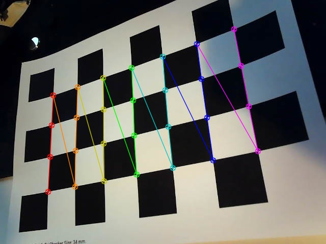
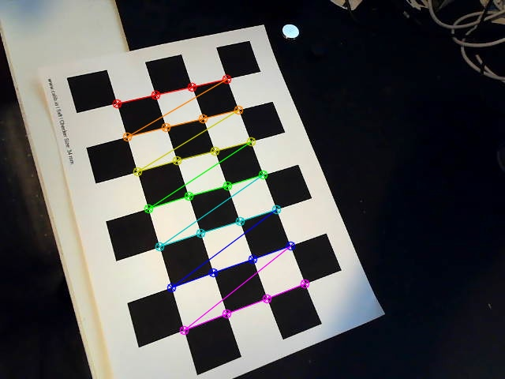
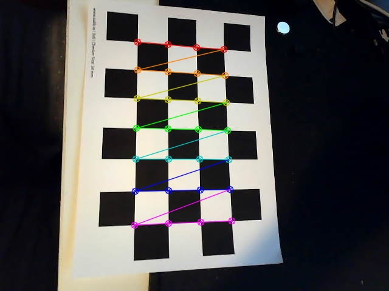
Look at the pictures with the detected corners. Each coloured dot must sit exactly on a point where four squares meet. The coloured lines join the corners in the order in which OpenCV returns them.
The same script on our HQ camera photos
Here is the output for the 23 photos that we took with the HQ camera of a course kit (shortened):
Found 23 photos (.jpg, .jpeg or .png).
calibration_image_00.jpg: chessboard found
…
calibration_image_04.jpg: chessboard found
calibration_image_05.jpg: chessboard NOT found
calibration_image_06.jpg: chessboard found
…
calibration_image_22.jpg: chessboard found
The chessboard was found in 22 of 23 photos.
Camera Matrix:
[[1.97601214e+03 0.00000000e+00 1.02502387e+03]
[0.00000000e+00 1.97964794e+03 7.84990216e+02]
[0.00000000e+00 0.00000000e+00 1.00000000e+00]]
Distortion Coefficients:
[[-0.48846611 0.24598182 0.00114731 -0.00312556 0. ]]
RMS reprojection error over all photos: 0.903 px
calibration_image_00.jpg: 0.430 px
…
calibration_image_04.jpg: 2.006 px
…
calibration_image_18.jpg: 0.250 px
calibration_image_19.jpg: 2.357 px
calibration_image_20.jpg: 0.449 px
…NumPy prints large numbers in scientific notation: 1.97601214e+03 means 1976.01. Two photos have a much larger error than the others: photo 19, in which the board moved, and photo 04, a very close and strongly tilted view that is slightly soft. After we deleted both from the folder and ran the script again, the RMS error fell from 0.903 to 0.636 px, fx became 1986.38 px and k1 became −0.491. These are the reference values for the HQ camera in the rest of this page.
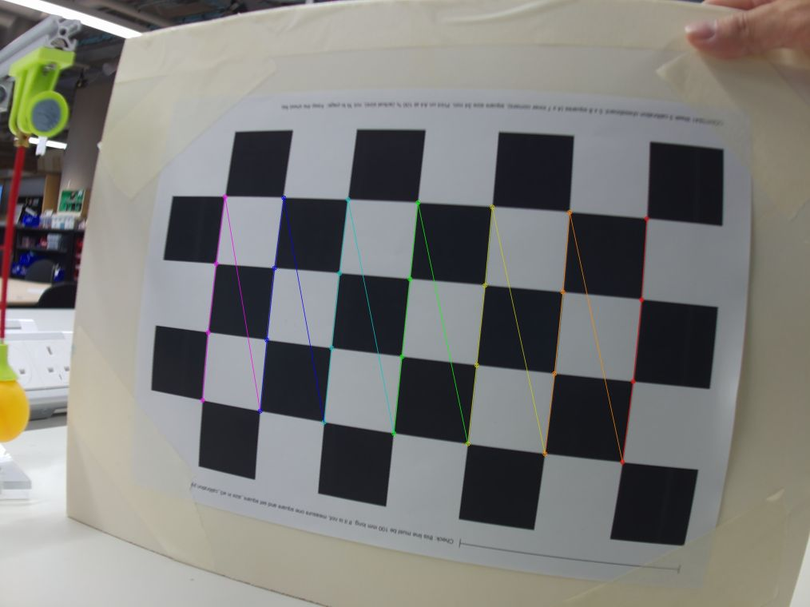
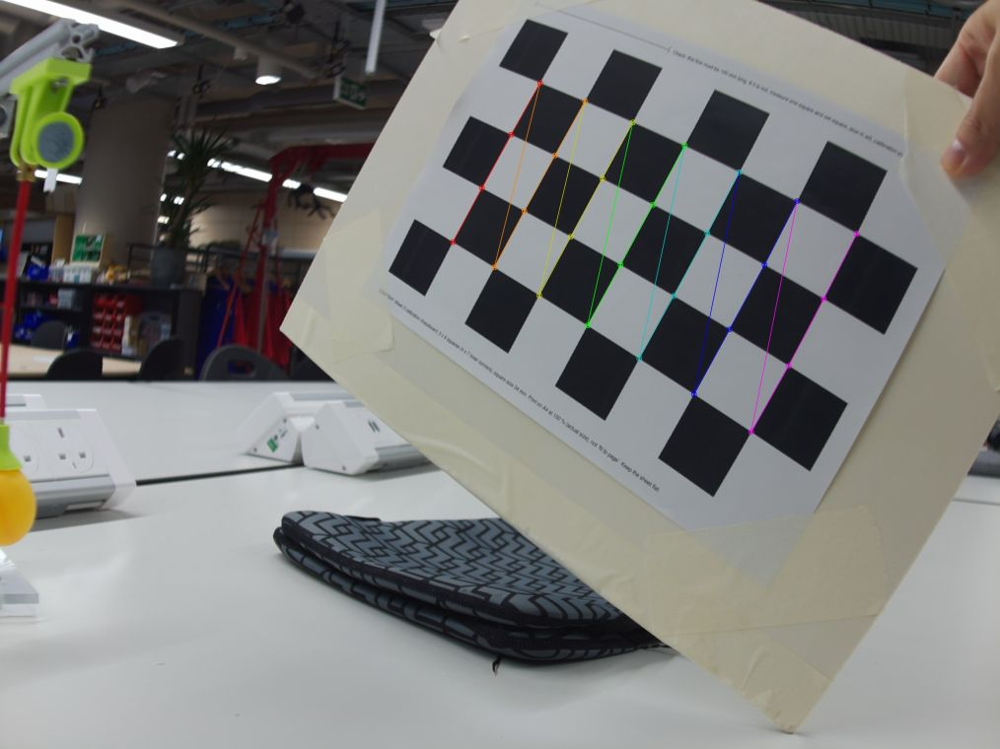
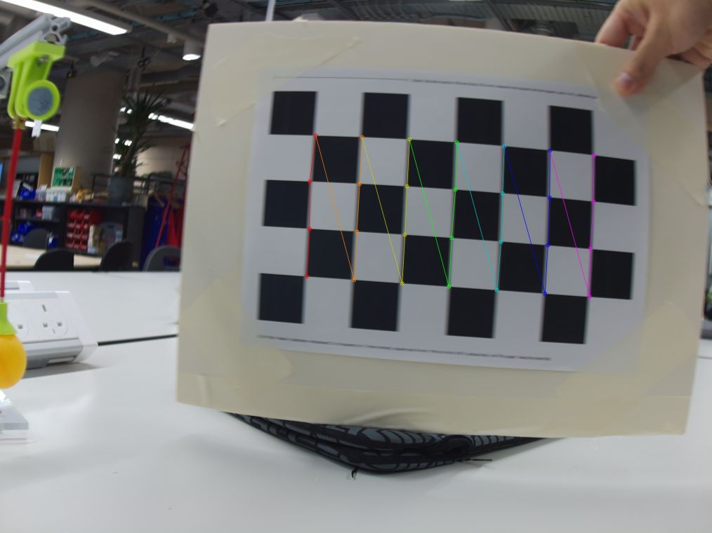
What the script does, step by step
Code · 4 partsStep 1 · The 3D points/Finding the corners/Steps 2–3 · The 2D points/Steps 4–6 · Calibrate and save
# Step 1: Prepare object points
# Define the chessboard size (number of internal corners)
chessboard_size = (4, 7) # Must be the same as in calibration_cap.py
square_size = 34.0 # Size of a square in your defined unit (e.g., 1.0 for meters or mm)
# With few photos, the third radial distortion coefficient k3 cannot be measured reliably, so we keep it
# at 0. A synthetic test with the HQ camera, the 6 mm lens and the 17-photo shot list showed that fixing
# k3 did not change fx and slightly reduced the error near the image corners.
fix_k3 = True
# Prepare the object points for a standard chessboard
objp = np.zeros((chessboard_size[0] * chessboard_size[1], 3), np.float32)
objp[:, :2] = np.mgrid[0:chessboard_size[0], 0:chessboard_size[1]].T.reshape(-1, 2)
objp *= square_sizeThe board defines the world coordinate system: its first inner corner is the origin, and the board lies in the plane \(Z = 0\). objp lists the 28 corners as (0,0,0), (34,0,0), (68,0,0), (102,0,0), (0,34,0), … in millimetres. These 3D points are the same for every photo.
fix_k3 = True keeps the third radial coefficient at zero, because 15 to 20 photos cannot measure it reliably (section 4.1, check 3).
# cv2.cornerSubPix moves each corner that findChessboardCorners found to its exact position, with
# sub-pixel accuracy. It searches a window of 11 x 11 pixels around each corner: (5, 5) means 5 pixels
# on each side. The window must stay smaller than about half a square in the image.
# It stops after 30 steps, or earlier when a step moves the corner by less than 0.001 pixels.
subpix_window = (5, 5)
subpix_criteria = (cv2.TERM_CRITERIA_EPS + cv2.TERM_CRITERIA_MAX_ITER, 30, 0.001)
def find_corners(gray):
"""Return the inner corners of the chessboard in a grey image, or None if the board is not found."""
found, corners = cv2.findChessboardCorners(gray, chessboard_size, None)
if not found:
return None
return cv2.cornerSubPix(gray, corners, subpix_window, (-1, -1), subpix_criteria)findChessboardCorners locates the 28 inner corners in the full-size grey photo. A true corner rarely lies exactly on a whole pixel, so cornerSubPix then moves each corner to its exact position, with sub-pixel accuracy, using the brightness gradients in an 11 × 11-pixel window around it. Without this step, the RMS error of our HQ calibration rises from 0.64 to 1.01 px (section 5.1, experiment 1).
The corners come out in a fixed order that matches objp, so each detected corner is paired with its 3D point.
for fname in images:
img = cv2.imread(str(fname))
if img is None:
print(f" {fname.name}: cannot be read, skipped")
continue
gray = cv2.cvtColor(img, cv2.COLOR_BGR2GRAY)
# A calibration is only valid for one image size, so all photos must have the same size.
if image_shape is None:
image_shape = gray.shape[::-1] # (width, height)
elif gray.shape[::-1] != image_shape:
sys.exit(f"Error: {fname.name} is {gray.shape[1]}x{gray.shape[0]} pixels, but the first "
f"photo is {image_shape[0]}x{image_shape[1]}. All photos must have the same size.")
# Step 3: Find the chessboard corners, and refine them to sub-pixel accuracy
corners = find_corners(gray)
print(f" {fname.name}: chessboard {'found' if corners is not None else 'NOT found'}")
if corners is not None:
objpoints.append(objp) # Add object points
imgpoints.append(corners) # Add image points
used_images.append(fname)The script reads every photo of the folder and skips the pictures that it saves itself. All photos must have the same size, because K is measured in pixels: a photo of another size stops the script with an error message.
For every photo in which the board is found, the 3D points objp and the 2D corners go into two lists. These are the 3D–2D pairs that the calibration needs. The script then checks that it has at least 3 photos, and prints a note below 12.
# Step 4: Perform camera calibration
# rms is the RMS reprojection error in pixels (see Step 7)
flags = cv2.CALIB_FIX_K3 if fix_k3 else 0
rms, camera_matrix, dist_coeffs, rvecs, tvecs = cv2.calibrateCamera(objpoints, imgpoints, image_shape, None, None,
flags=flags)
# Step 5: Display results
print("\nCamera Matrix:\n", camera_matrix)
print("\nDistortion Coefficients:\n", dist_coeffs)
# Step 6: Save the calibration results
np.savez(output_folder / 'calibration_data.npz', camera_matrix=camera_matrix, dist_coeffs=dist_coeffs,
rvecs=rvecs, tvecs=tvecs, image_size=image_shape)
print(f"\nResults saved in: {output_folder}")This one call does the actual work, with Zhang's method, the standard algorithm for finding the intrinsic parameters from several views of a flat pattern. It finds the K, the distortion coefficients and the board positions that make the projected objpoints land as close as possible to the detected imgpoints. image_shape is (width, height).
The results go into calibration_data.npz in the output folder, so that you can load them in your own scripts (section 4.2).
OpenCVcv2.calibrateCamera·based on: Camera Calibration › Calibration
The outputs of cv2.calibrateCamera
| Output | Kind | What it is | Sample photos | HQ camera, 20 photos |
|---|---|---|---|---|
retval (the script calls it rms) | Quality | RMS reprojection error over all corners, in pixels (section 3.3) | 0.354 px | 0.636 px |
cameraMatrix | Intrinsic | The 3 × 3 matrix K: \(f_x, f_y, c_x, c_y\) in pixels | f ≈ 553 px | f ≈ 1986 px |
distCoeffs | Intrinsic | \((k_1, k_2, p_1, p_2, k_3)\) | k₁ = 0.036 | k₁ = −0.491 |
rvecs | Extrinsic | One rotation per photo, as a vector of 3 numbers (axis and angle; cv2.Rodrigues turns it into a 3 × 3 rotation matrix R): how the board was turned relative to the camera | 6 × (3, 1) | 20 × (3, 1) |
tvecs | Extrinsic | One translation per photo: where the origin of the board was, in camera coordinates, in the units of square_size (here mm) | z = 273–390 mm | z = 266–601 mm |
calibration_data.npz holds camera_matrix, dist_coeffs, rvecs, tvecs and image_size (the width and height of the photos).
Reprojection error
How do you know whether the calibration is any good? Take the estimated parameters, project the known 3D board corners back into each photo with cv2.projectPoints, and measure how far they land from the corners that were actually detected. The root-mean-square (RMS) distance over all \(N\) corners in all photos is:
Each corner contributes a small error vector. Below, the error vectors are drawn magnified on top of the photos, because at their true size (a fraction of a pixel) they would be invisible.
A single bad photo can spoil the whole calibration, so always check the error of each photo, not only the overall RMS error. If one photo has a much larger error than the others, look at it. If it is blurred or the board is bent, delete it from calibration_images/ and run calibration.py again. Then check that the remaining photos still cover the shot list.
What does the script print?
Code · 1 partStep 7 · The error over all photos and for each photo
# Step 7: Check the calibration. The reprojection error is the distance, in pixels, between
# the corners found in a photo and the corners that the calibrated camera model predicts.
print(f"\nRMS reprojection error over all photos: {rms:.3f} px")
for i, fname in enumerate(used_images):
imgpoints2, _ = cv2.projectPoints(objpoints[i], rvecs[i], tvecs[i], camera_matrix, dist_coeffs)
# OpenCV 4 gives the corners as an array of shape (28, 1, 2) and OpenCV 5 as (28, 2), so both
# arrays are reshaped to one row (x, y) per corner before they are compared.
error = cv2.norm(imgpoints[i].reshape(-1, 2), imgpoints2.reshape(-1, 2), cv2.NORM_L2) / np.sqrt(len(imgpoints2))
print(f" {fname.name}: {error:.3f} px") # RMS of this photoThe first line, RMS reprojection error over all photos, is rms from calibrateCamera: exactly the formula above. This is the number to report.
The lines below it are the RMS error of each photo. cv2.norm(…, NORM_L2) is \(\sqrt{\sum \lVert e\rVert^2}\) over the 28 corners of one photo; dividing by \(\sqrt{28}\) turns it into the RMS error of that photo.
The OpenCV tutorial prints a different number, which it calls “total error”. It divides by the number of corners outside the square root, so it is at least √28 ≈ 5.3 times smaller than the RMS error. calibration.py does not print it.
OpenCVcv2.projectPoints·cv2.norm·tutorial: Camera Calibration › Re-projection Error
| RMS error | A rough guide |
|---|---|
| < 0.5 px | Good |
| 0.5–1 px | Usable; look for blurred or badly detected photos and take them again |
| > 1 px | Something is wrong: a bent board, motion blur, or photos from different sizes or sensor modes |
This guide comes from 640 × 480 webcams. At 2028 × 1520 each pixel covers a smaller part of the scene, so the same slight bend of the board or the same blur gives a larger error in pixels. Our HQ calibration with 20 photos has 0.64 px, which is usable. Most of its error comes from the close-up photos, probably because a printed sheet on card is not perfectly flat, or because the lens is slightly out of focus at short range.
A low error shows that the model fits your photos. It cannot tell you about parts of the image that your photos never covered, or about a focal length that your views cannot pin down. In section 2.3, 17 photos in the centre give an RMS error as small as the shot list's, yet a focal length that is up to 45 px wrong.
Undistort an image
Now use the calibration. Undistortion bends curved lines back to straight lines, but this has a side effect: the corrected image no longer fills a rectangle neatly. You choose how to deal with this with cv2.getOptimalNewCameraMatrix and its alpha parameter:
- alpha = 0: zoom in until every pixel is valid. There are no black borders, but you lose some of the field of view.
- alpha = 1: keep every pixel of the original. You see the whole field of view, with curved black borders around it.
The function also returns roi (region of interest), the largest rectangle in the result that contains only valid pixels.
Code · 1 partStep 8 · Undistort and show
# Step 8: Use the calibration results to undistort a photo from the same folder
img = cv2.imread(str(used_images[0]))
h, w = img.shape[:2]
new_camera_matrix, roi = cv2.getOptimalNewCameraMatrix(camera_matrix, dist_coeffs, (w, h), 1, (w, h))
# Undistort the image
undistorted_img = cv2.undistort(img, camera_matrix, dist_coeffs, None, new_camera_matrix)
# Crop the image to the valid region (optional, based on ROI). If this region is tiny, the distortion
# coefficients are wrong, so we keep the whole image.
x, y, rw, rh = roi
if rw * rh >= 0.3 * w * h:
undistorted_img = undistorted_img[y:y+rh, x:x+rw]
else:
print("\nWarning: after undistortion only a small part of the image is valid. Take more photos with "
"the chessboard near the corners of the image, and calibrate again.")
# Save the undistorted image, and display it next to the original
undistorted_path = output_folder / f"{used_images[0].stem}_undistorted.jpg"
cv2.imwrite(str(undistorted_path), undistorted_img)
print(f"\nUndistorted photo saved as: {undistorted_path}")
if show:
print("Showing the photo before and after undistortion. Press any key in one of the windows to finish.")
cv2.imshow('Original Image', img)
cv2.imshow('Undistorted Image', undistorted_img)
cv2.waitKey(0)
cv2.destroyAllWindows()The script undistorts the first photo in which the board was found. getOptimalNewCameraMatrix uses alpha = 1 (the fourth argument); the fifth argument is the output size. cv2.undistort does the undistortion, and the result is cropped to the ROI, so the saved picture shows only valid pixels at the alpha = 1 scale.
If the ROI covers less than 30% of the image, the distortion model is over-fitted (section 4.1): the script then keeps the whole image and prints a warning.
At the end, the script waits in cv2.waitKey(0) until you press a key in one of its windows. Ctrl+C in the terminal does not stop it there, so click on one of the windows and press any key. The two windows open on top of each other: drag one aside to compare them. Without a display, the script saves the picture and ends.
OpenCVcv2.getOptimalNewCameraMatrix·cv2.undistort·based on: Camera Calibration › Undistortion
With the HQ camera and its 6 mm lens, the difference is large. With alpha = 1, the curved black borders show how far the lens pulls the corners of the image inwards, and the ROI keeps 1840 × 1282 of the 2028 × 1520 pixels. With alpha = 0, the image is zoomed in and the bent edges of the sheet are straight. With the webcam of the sample photos, the change is so small that you have to switch between the images and watch the edges of the board.
Undistorting one of the calibration photos is a quick check. A stronger test is a new photo, taken with the same camera, image size and sensor mode, of something with long straight lines near the edges of the image, such as a door frame, a shelf or the frame of the wind tunnel. Experiment 4 in section 5.1 undistorts any photo or video frame with your calibration file.
Optional: calibrate from a video
Instead of taking photos with calibration_cap.py, you can record a video of the chessboard, and calibration.py then chooses the frames.
Record the video with the same image size and the same sensor mode as your wind-tunnel videos, for example with your own recording script. If you record in the 120 fps mode, you can use script 5.1 of the Week 6 Picamera2 tutorial (
5.1_record_120fps.py). It records only 5 seconds, so changetime.sleep(5)totime.sleep(40)in the script, which gives you time for all the positions. The frame rate does not matter for the calibration.Keep the camera still, and move the board slowly through the positions of the shot list. Hold the board still for about one second at each position. The rules for every photo in section 2.3 apply to these positions too.
Run the calibration with the name of your video file:
Terminal on the Pipython calibration.py --video my_video.mp4The script looks for the chessboard in every 10th frame (
--step). From the frames in which it finds the board, it keeps at most 30 (--max-frames), spread evenly over the video, and saves them ascalibration_output/<video name>/frames/frame_NNNNNN.jpg. Then it calibrates from these frames. A long video can take some time, so the script prints its progress.Look at the saved frames and delete the blurred ones: a frame from a moment when the board was moving can still be accepted. Then calibrate again from the remaining frames. The script prints the command for this, with the full path of the folder; inside
week07_calibration, the short form is:Terminal on the Pipython calibration.py --images calibration_output/my_video/framesDo not run
--videoagain after you have deleted frames: every--videorun first deletes all saved frames of that video and then saves new ones.
In our test, the apt OpenCV on the Pi opened both an H.264 .mp4 file and a raw .h264 file as written by rpicam-vid. Two videos with the same name and different endings (for example test.mp4 and test.h264) share one output folder, so the second run replaces the results of the first.
Check your result
Read your result
Compare your numbers with these two reference results: the six sample photos (a 640 × 480 webcam) and our calibration of the HQ camera of a course kit with the 6 mm lens (2028 × 1520, 20 photos after removing photos 04 and 19). If you changed CAPTURE_SIZE, your fx, fy, cx and cy scale with the image size, and the principal point should be near the centre of your image, (W/2, H/2).
| Quantity | Sample photos | HQ camera | Sanity check |
|---|---|---|---|
| \(f_x\), \(f_y\) (px) | 552.90, 553.17 | 1986.38, 1989.42 | Nearly equal, so the pixels are square ✓ |
| \(c_x\), \(c_y\) (px) | 362.67, 230.86 | 1020.52, 785.03 | Near the image centre: (320, 240) for the samples, (1014, 760) for the HQ camera ✓ |
| \(k_1\) | 0.0365 | −0.4910 | HQ camera: a large negative k₁ with a smaller positive k₂ is strong barrel distortion, typical of a wide-angle lens. The script keeps k₃ = 0 |
| \(k_2\) | −0.0225 | 0.2450 | |
| \(k_3\) | 0 (fixed) | 0 (fixed) | |
| \(p_1\), \(p_2\) | −0.0027, −0.0004 | 0.0006, −0.0024 | Tiny, so the lens is well aligned with the sensor ✓ |
| RMS error | 0.354 px | 0.636 px | Good and usable (section 3.3) ✓ |
Four checks that you can do yourself
Field of view. From \(f_x\) and the image width \(W\), the horizontal field of view is \(\text{HFOV} = 2\arctan\!\big(\tfrac{W}{2 f_x}\big)\) (Lecture 5, slide 107). For the HQ camera, \(2\arctan(1014/1986) \approx 54^\circ\) horizontally and \(2\arctan(760/1989) \approx 42^\circ\) vertically. You can also check fx against the lens: in the 2028 × 1520 mode, the sensor combines 2 × 2 pixels of 1.55 µm, so one image pixel is 3.1 µm wide, and a 6 mm lens gives 6 mm / 3.1 µm ≈ 1935 px. Our 1986 px is within 3% of this nominal value. For the sample webcam, \(2\arctan(320/553) \approx 60^\circ\). If you get 10° or 150°, something is wrong.
Distances. The third number of each
tvecis the depth of the first inner corner of the board along the viewing direction of the camera: roughly how far away the board was. In our HQ photos it is 266–601 mm, which matches holding the board between about a quarter of a metre and an arm's length from the camera. If your distances look wrong by a constant factor, checksquare_size.Over-fitting. When too few photos reach the corners of the image, k₂ and k₃ can grow large with opposite signs. They then cancel each other in the centre of the image and swing wildly towards the edges, like a high-degree polynomial fitted to points that are all in the middle. That is why the script sets
fix_k3 = True. Tryfix_k3 = Falseon the sample photos: the RMS error barely changes (0.354 → 0.351 px), but k₂ jumps to 0.32 and k₃ to −0.76, and the alpha = 1 ROI shrinks from 636 × 475 to 543 × 415, because the over-fitted polynomial bends back before it reaches the corners of the image. On our 20 HQ photos, which cover more of the image, a free k₃ stays small (−0.12), the RMS error changes from 0.636 to 0.632 px and fx by less than 0.1%. So keeping k₃ at 0 costs nothing. Judge a calibration by its RMS error and its undistorted picture, not by the single coefficients.Coverage. Did your photos reach every part of the image? Our HQ photos missed most of the bottom third (section 2.3), so the correction near the bottom corners is extrapolated rather than measured, even though the RMS error looks fine. More photos with the board low in the image would fix this.
OpenCVcv2.calibrationMatrixValues·cv2.calibrateCamera·calib3d reference › radial distortion must be monotonic
Interpret your result
This section brings the earlier sections together, so that you can judge your own calibration in one place. Go through the output of calibration.py from top to bottom, in the order in which the script prints it. For each line, the table says what it means, what a good value looks like, and which section explains it in detail.
| What the script prints | What it means | A good result | Explained in |
|---|---|---|---|
calibration_image_05.jpg: chessboard NOT found and The chessboard was found in 22 of 23 photos. | The number of photos that take part in the calibration. A photo without the board is skipped. The result is valid only for this image size and sensor mode, and only for the same camera with the same focus. | 12 photos or more, ideally the 17 photos of the shot list. Below 12, the script prints a note. | 2.3, 4.4 (Q6, Q8) |
Camera Matrix: | The 3 × 3 matrix K. Its first row is fx, 0, cx and its second row is 0, fy, cy. fx and fy are the focal length measured in pixels. (cx, cy) is the principal point, where the optical axis meets the image. | fx and fy agree to within about 1% (square pixels). The horizontal field of view, 2 arctan(W / 2fx), fits your lens: about 54° for the HQ camera with the 6 mm lens at 2028 × 1520. (cx, cy) lies near the image centre (W/2, H/2); being some tens of pixels off is normal. | 1.5, 4.1 (check 1) |
Distortion Coefficients: | Five numbers in the order k1, k2, p1, p2, k3. k1 and k2 describe radial distortion: a negative k1 means barrel distortion (straight lines bow outwards), a positive k1 means pincushion distortion (they bow inwards). p1 and p2 describe tangential distortion from a slightly tilted lens. k3 is 0 because the script fixes it. | p1 and p2 are close to 0 (a few thousandths). For the HQ camera with the 6 mm lens, k1 is about −0.49 and k2 about 0.25. | 1.3, 1.4, 4.1 (check 3) |
Results saved in: … | calibration_data.npz in this folder holds K, the distortion coefficients, the board position in each photo (rvecs, tvecs) and the image size, for your later scripts. The third number of each tvec is the distance of the board along the viewing direction of the camera, in millimetres. | The distances match how far away you held the board. | 3.2, 4.1 (check 2) |
RMS reprojection error over all photos: 0.636 px | How well the model fits all photos together (rms from calibrateCamera). This is the number to report. | Below 0.5 px is good, 0.5–1 px is usable, and above 1 px means that something is wrong. Our HQ calibration at 2028 × 1520 has 0.64 px, which is usable. | 3.3 |
| The lines below it, one per photo | How well the model fits each photo: the RMS distance between the corners that were detected and the corners that the model predicts. | All photos have similar values. A photo with a much larger value than the others is usually blurred, or its board was bent: delete it from calibration_images/ and run the script again. | 3.3, 2.3 (good and bad photos) |
Warning: after undistortion only a small part of the image is valid. | The distortion model is over-fitted: it bends back before it reaches the corners of the image, usually because no photo reached them. | The warning does not appear. | 3.4, 4.1 (check 3) |
Undistorted photo saved as: …_undistorted.jpg, and the two windows | The calibration applied to the first photo that was used. | Lines that are straight in the scene look straight, also near the edges of the image. | 3.4 |
Example: reading our result for the HQ camera
With all 22 usable photos, the script printed an RMS error of 0.903 px, and two photos stood out: photo 19 with 2.36 px and photo 04 with 2.01 px, while most photos had 0.2 to 0.8 px. Photo 19 was blurred because the board moved, so we deleted both photos and ran the script again. The RMS error fell to 0.636 px, while fx changed by only 0.5% (from 1976 to 1986 px). So removing the two photos improved the fit a lot, but changed the focal length only a little. fx = 1986.38 and fy = 1989.42 px differ by 0.15%, so the pixels are square. With W = 2028, the horizontal field of view is 2 arctan(1014 / 1986) ≈ 54°, which fits the 6 mm lens. The principal point (1020.5, 785.0) is 7 px to the right of and 25 px below the image centre (1014, 760), which is normal. k1 = −0.491 and k2 = 0.245 mean strong barrel distortion: near the corners of the image, points move by about 200 px. p1 and p2 are a few thousandths. The coverage plot in section 2.3 shows the one weakness: the bottom third of the image is almost empty, so we would take more photos there before trusting the correction near the bottom corners.
A small RMS error only shows that the model fits your photos. Trust your calibration only when all three of these are true: the RMS error is small (section 3.3), your photos covered every part of the image, including the corners (section 2.3), and straight lines look straight in the undistorted image (section 3.4). If one of them fails, the troubleshooting table in section 4.3 lists the usual causes.
What to do next
Keep calibration_data.npz together with your photos. Use it only with the same camera, at the same image size and sensor mode, and with the same focus (questions Q6 and Q8 in section 4.4). To use your calibration in another script, load the file like this:
import numpy as np
data = np.load("calibration_output/calibration_images/calibration_data.npz")
camera_matrix, dist_coeffs = data["camera_matrix"], data["dist_coeffs"]Experiments 4 and 5 in section 5.1 use the file to undistort a photo, a video frame or the live camera image.
Troubleshooting
| Message or symptom | Likely cause | Fix |
|---|---|---|
Camera __init__ sequence did not complete, Device or resource busy or Pipeline handler in use by another process | Another program is still using the camera. Only one program can use the camera at a time. | Find the terminal that runs rpicam-hello or another camera script and press Ctrl+C there, or close its window. If several team members use the Pi through Pi Connect, agree who runs the camera. If you cannot find the program, restart the Pi. |
| The camera is not found at all | The camera is not detected, for example because of the ribbon cable | Run rpicam-hello --list-cameras, and see “First camera capture (sanity check)” in the Week 6 setup guide for your kit |
Picamera2 is not available (…), so the laptop webcam is used. on the Pi | The environment cannot see the apt Picamera2 | Activate the environment with source ~/comp0219/bin/activate; it must have been made with --system-site-packages (section 2.4) |
from picamera2 import Picamera2 fails with an error such as numpy.dtype size changed | pip has installed OpenCV or NumPy into the comp0219 environment | Remove only the pip copies: pip uninstall -y opencv-python opencv-contrib-python numpy. The apt packages stay installed. |
| Keys do nothing in the preview window | The window does not have the keyboard focus | Click on the window, then press c or q |
c prints No chessboard detected, so nothing was saved. | Part of the board is outside the image, glare or blur, or chessboard_size does not match your board | Keep the whole board in the image, improve the light, and count the inner corners (section 2.2) |
No window appears, or the script stops with could not connect to display, no Qt platform plugin could be initialized and Aborted | The terminal has no display (Remote shell or SSH), but the variable DISPLAY or WAYLAND_DISPLAY is set, for example after export DISPLAY=:0 | Run the script again with --nogui. The message also says that reinstalling the application may help: do not reinstall OpenCV with pip, because this does not help and it stops Picamera2 from working. |
| The windows open on the Pi's own monitor, where you cannot see them | The same cause, in a remote terminal with DISPLAY set | Press Ctrl+C and run the script again with --nogui. If calibration.py already waits for a key at its end, press Ctrl+\ (hold Ctrl and press the backslash key), or close the terminal: the results are already saved. |
calibration.py does not stop when you press Ctrl+C at the end | It waits for a key press in one of its windows, and Ctrl+C does not interrupt this wait | Click on one of the two windows and press any key |
libpng warning: iCCP: known incorrect sRGB profile, and coloured INFO lines | Messages from the window toolbar and from libcamera | Nothing: they are harmless |
Error: this folder does not exist. Check the --images option. | A relative path is read from the folder in which you run the command | Run the command inside week07_calibration, or give the full path |
Error: calibration_image_NN.jpg is WxH pixels, but the first photo is … | Photos of two image sizes in one folder | Empty calibration_images/ and capture again with one setup |
Error: the chessboard was not found in any photo. | chessboard_size counts squares instead of inner corners, or the photos do not show the whole board | Count the inner corners (section 2.2) |
Note: this is enough to test the script, but a real calibration needs the chessboard in at least 12 photos | Too few usable photos for a reliable result | Capture more photos, following the shot list (section 2.3) |
Warning: after undistortion only a small part of the image is valid. | The distortion model is over-fitted, usually because no photo reaches the corners of the image | Capture photos with the board near the edges and corners; keep fix_k3 = True |
| RMS error above 1 px | A bent board, motion blur, or a few bad photos | Look at the error of each photo, delete the bad photos and run the script again; stiffen the board; take blurred photos again. A wrong square_size does not cause a large error. |
Check yourself
Q1Your board has 9 × 6 squares. What should chessboard_size be?
(8, 5) or (5, 8): one fewer than the number of squares in each direction, because OpenCV counts inner corners.
Q2Which outputs of calibrateCamera describe the camera, and which describe each photo?
The camera (intrinsic): cameraMatrix and distCoeffs. Each photo (extrinsic): rvecs[i] and tvecs[i], the position of the board in photo i. retval is the RMS reprojection error.
Q3You change square_size from 34.0 to 1.0. What changes in the output?
Only tvecs, which become 34 times smaller (now measured in squares instead of millimetres). K, the distortion coefficients, the rotations and the error stay exactly the same. Scaling the whole world does not change how the image looks.
Q4\(f_x = 1986\) px for a 2028-pixel-wide image. What is the horizontal field of view?
\(2\arctan(1014/1986) \approx 54^\circ\).
Q5Why do you need photos with the board near the corners of the image?
Distortion grows with \(r^2, r^4, r^6\), so it is largest in the corners. Without detected corners there, the coefficients are only extrapolated from the centre, and the correction near the edges can be wrong even when the RMS error looks small.
Q6You calibrated at 2028 × 1520, with the full field of view. Can you use the same calibration for 120 fps videos at 1332 × 990?
No. The 120 fps mode reads only the central part of the sensor, so it has a smaller field of view, a different principal point and a different pixel scale. K and the distortion coefficients do not fit it. Calibrate again with CAPTURE_SIZE = (1332, 990) and the same SENSOR setting as your recording script.
Q7What is the difference between alpha = 0 and alpha = 1 in getOptimalNewCameraMatrix?
alpha = 0 zooms in so that every output pixel is valid (no black border, less field of view). alpha = 1 keeps every input pixel (full field of view, curved black borders). Values in between mix the two.
Q8After you calibrated, a team member turns the focus ring of the lens. Is your calibration still valid?
No. The focus changes the effective focal length and the distortion, so you need to calibrate again. This is why you should focus first and then leave the focus ring alone.
Q9Your RMS error over all photos is 0.90 px, and two photos have 2.0 and 2.4 px while the others have 0.2 to 0.8 px. What do you do?
Look at the two photos. If they are blurred or the board is bent, delete them and run calibration.py again. Then check that the remaining photos still cover the shot list, and take new photos for any position that is now missing. In our test, this lowered the RMS error from 0.90 to 0.64 px.
Going further
Optional experiments
Try these optional experiments one at a time, and watch how the printed results change. Make a copy of calibration.py first, so that you can go back to the original.
1 · The effect of sub-pixel refinement
In the function find_corners of calibration.py, replace the last line, return cv2.cornerSubPix(...), with return corners, and run the calibration again. On the sample photos, the RMS error rises from 0.354 to 0.437 px, and one corner of photo 02 ends up 3 px away from its prediction. On our 20 HQ photos, the RMS error rises from 0.636 to 1.01 px.
2 · Leave k₃ free
Set fix_k3 = False at the top of calibration.py. On the sample photos, the RMS error hardly changes, but the coefficients and the undistorted image change noticeably (section 4.1, check 3).
3 · Make your coverage plot
To see where in the image your corners are, add these lines to calibration.py just above # Step 4: Perform camera calibration. They save coverage.png in the output folder and print how many corners lie in each ninth of the image:
CodeAdd above # Step 4
# Coverage: where in the image are the corners of all photos?
w, h = image_shape
coverage = np.full((h, w, 3), 255, np.uint8)
counts = np.zeros((3, 3), int)
for pts in imgpoints:
for u, v in pts.reshape(-1, 2):
cv2.circle(coverage, (int(u), int(v)), 6, (0, 0, 0), -1)
counts[min(2, int(3 * v / h)), min(2, int(3 * u / w))] += 1
for k in (1, 2):
cv2.line(coverage, (k * w // 3, 0), (k * w // 3, h), (0, 0, 255), 2)
cv2.line(coverage, (0, k * h // 3), (w, k * h // 3), (0, 0, 255), 2)
cv2.imwrite(str(output_folder / "coverage.png"), coverage)
print("Corners in each ninth of the image (top row first):")
print(counts)For our 22 HQ photos, the bottom row of the printed numbers, which is the bottom third of the image, holds only 7, 22 and 9 corners, while every other ninth of the image holds more than 40.
OpenCVtutorial: Interactive camera calibration application › Calibration process
4 · Undistort another photo or a video frame
Save this as undistort_photo.py next to the scripts. It loads your calibration and undistorts any photo of the same size, for example a frame from your wind-tunnel video, with alpha = 0. Run it with python undistort_photo.py my_photo.jpg; the result is saved next to the photo with _undistorted in its name. It needs no display.
Codeundistort_photo.py
import sys
from pathlib import Path
import cv2
import numpy as np
# Usage: python undistort_photo.py PHOTO [CALIBRATION_FILE]
# Without CALIBRATION_FILE, it uses the result of "python calibration.py --images calibration_images".
here = Path(__file__).resolve().parent
photo = Path(sys.argv[1])
npz = Path(sys.argv[2]) if len(sys.argv) > 2 else here / "calibration_output" / "calibration_images" / "calibration_data.npz"
data = np.load(npz)
K, D = data["camera_matrix"], data["dist_coeffs"]
w, h = (int(v) for v in data["image_size"])
img = cv2.imread(str(photo))
if img is None:
sys.exit(f"Error: cannot read {photo}")
if img.shape[1] != w or img.shape[0] != h:
sys.exit(f"Error: the photo is {img.shape[1]}x{img.shape[0]}, but the calibration was made at {w}x{h}.")
# alpha = 0: zoom in until every pixel is valid (section 3.4)
new_K, roi = cv2.getOptimalNewCameraMatrix(K, D, (w, h), 0, (w, h))
undistorted = cv2.undistort(img, K, D, None, new_K)
out = photo.with_name(photo.stem + "_undistorted" + photo.suffix)
cv2.imwrite(str(out), undistorted)
print(f"Saved {out}")Your measurements do not always need whole undistorted images. If you track a few points, such as the position of a marker, you can correct only those points with cv2.undistortPoints(points, K, D, P=K), which is much faster.
5 · Undistort the live camera image
Save this as undistort_live.py next to the scripts and run it in a terminal on the Pi desktop. It shows the live camera image next to the undistorted image, at a quarter of the size. Press q in the window, or Ctrl+C in the terminal, to stop. It uses the same camera setup as calibration_cap.py with its default settings; if you changed SENSOR there, add the same sensor= argument to create_video_configuration here.
Codeundistort_live.py
from pathlib import Path
import cv2
import numpy as np
from picamera2 import Picamera2
here = Path(__file__).resolve().parent
data = np.load(here / "calibration_output" / "calibration_images" / "calibration_data.npz")
K, D = data["camera_matrix"], data["dist_coeffs"]
w, h = (int(v) for v in data["image_size"])
# Compute the undistortion maps once; cv2.remap then applies them to every frame (alpha = 0)
new_K, roi = cv2.getOptimalNewCameraMatrix(K, D, (w, h), 0, (w, h))
map1, map2 = cv2.initUndistortRectifyMap(K, D, None, new_K, (w, h), cv2.CV_16SC2)
picam2 = Picamera2()
picam2.configure(picam2.create_video_configuration(main={"size": (w, h), "format": "RGB888"}))
print("Sensor mode in use:", picam2.camera_configuration()["sensor"])
picam2.start()
try:
while True:
frame = picam2.capture_array()
undistorted = cv2.remap(frame, map1, map2, cv2.INTER_LINEAR)
both = cv2.resize(np.hstack([frame, undistorted]), None, fx=0.25, fy=0.25)
cv2.imshow("Original | Undistorted (alpha = 0)", both)
if cv2.waitKey(1) & 0xFF == ord("q"):
break
except KeyboardInterrupt:
pass
picam2.stop()
picam2.close()
cv2.destroyAllWindows()OpenCVcv2.initUndistortRectifyMap·cv2.remap·based on: Camera Calibration › 2. Using remapping
This script computes the undistortion maps once with initUndistortRectifyMap and applies them to every frame with remap. This gives the same result as cv2.undistort, but it is much faster for video. On the Pi 5, the undistortion and the side-by-side picture take about 55 ms per frame, so expect about 15 pictures per second.
Further reading and tools
Reading
- OpenCV, Camera Calibration (Python tutorial) and the calib3d reference for the full distortion model.
- Raspberry Pi, The Picamera2 Library (PDF manual), for camera configurations and sensor modes, and the camera documentation.
- Z. Zhang, “A flexible new technique for camera calibration”, IEEE TPAMI 22(11), 2000: the method behind
calibrateCamera.
Other tools worth knowing
- GeoCalib (ECCV 2024) and AnyCalib (ICCV 2025) are neural networks that estimate the focal length and the distortion from a single photo, without a board. They are quick, but not accurate enough to replace a board when you need accurate measurements.
- ROS 2 camera_calibration: a window with buttons on top of OpenCV, for one camera or a stereo pair.
- mrcal: a high-precision calibration tool that also reports how uncertain the result is in different parts of the image.
- Kalibr (ETH Zurich): a research tool for calibrating several cameras together, and cameras together with an inertial measurement unit (IMU).
Sources and credits
This tutorial draws on the sources below. Most sections also link to the OpenCV pages that they draw on.
- COMP0241 intrinsic calibration tutorial. This page is adapted from the UCL COMP0241 lab tutorial “Camera intrinsic calibration with OpenCV” (repository Dkaka/COMP241_Labs, folder
calibration_tutorial/intrinsic/docs). Its layout, styles and interactive figures, most of the theory in part 1, the checklist, the simulated good and bad photos, the simulated shot-list comparison in section 2.3 and the table in “Interpret your result” (section 4.2) come from that page, changed for one Raspberry Pi HQ camera. We left out its ChArUco board, its fisheye model and its stereo calibration. - Lecture slides behind COMP0241. The COMP0241 page follows the slides “Camera Intrinsic Calibration” by Luchen Li. Here, the section headings give the matching slides of COMP0219 Lecture 5 instead.
- Sample photos and scripts. The six photos in
sample_calibration_images/are the sample photos of the COMP0241 lab, which COMP0241 credits to Luchen Li.calibration.pyandcalibration_cap.pyhave the same origin as the first COMP0241 scripts and were extended for COMP0219 (Picamera2, terminal mode, video input). The terminal mode ofcalibration_cap.pyis based on the COMP0241 capture script.calibration_gui.pyis the capture window of the COMP0241 lab (w3_calibration_gui.py), changed to use the Raspberry Pi camera. Its board positions, corner dots, automatic saving of a still board, running estimate and undistorted live view follow OpenCV’s interactive camera calibration application, and showing the uncovered parts in red comes from the COMP0241 window. The 17-photo shot list and the printable chessboard were written for COMP0219 and are also used by COMP0241. - HQ camera photos. The 23 photos, their outputs and the figures made from them (section 2.3, section 3.2, the HQ examples in sections 3.3 and 3.4) come from a test of this tutorial on a course kit (Raspberry Pi 5, HQ camera, 6 mm lens) on 26 November 2026.
- OpenCV tutorial Camera Calibration (Python).
calibration.pyfollows its code: the object points and the corner detection and refinement (Code, Setup), thecalibrateCameracall (Calibration), undistorting and cropping to the ROI (Undistortion), and the reprojection error (Re-projection Error; section 3.3 explains how the script's number differs).undistort_live.pyin section 5.1 follows its “2. Using remapping” approach. - OpenCV tutorial Camera calibration With OpenCV (C++, original author Bernát Gábor). Its Theory section gives the five distortion coefficients in OpenCV's order (section 1.4).
- OpenCV tutorials Create Calibration Pattern (Laurent Berger, Alexander Panov and Alexander Smorkalov) and Interactive camera calibration application (original author Vladislav Sovrasov). Their advice (a flat, matt board with its white border in view, views that cover the whole image, no steep angles) is part of the guidance in sections 2.2–2.3.
- OpenCV calib3d reference. The distortion formula and the projection steps of sections 1.4–1.5 are the five-coefficient form of the camera model given there. The
calibrateCameradocumentation cites Z. Zhang, “A flexible new technique for camera calibration”, IEEE TPAMI 22(11):1330–1334, 2000, and J.-Y. Bouguet, Camera Calibration Toolbox for MATLAB, 2004. - Raspberry Pi Picamera2 manual. The camera configuration in
calibration_cap.pyandundistort_live.pyuses the calls described there. - calib.io. The 5 × 8-square chessboard layout follows the calib.io boards; calib.io also has an online pattern generator.
- Software on this page. The formulas are drawn with KaTeX (MIT licence), which is included with the page, so it works without an internet connection. OpenCV is open source, released under the Apache License 2.0.